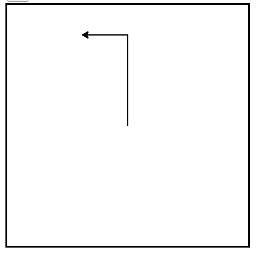

Hello, Little Turtles!¶

There are many modules in Python that provide very powerful features that we can use in our own programs. Some of these can send email or fetch web pages. Others allow us to perform complex mathematical calculations. In this chapter we will introduce a module that allows us to create a data object called a turtle that can be used to draw pictures.
Turtle graphics, as it is known, is based on a very simple metaphor. Imagine that you have a turtle that understands English. You can tell your turtle to do simple commands such as go forward and turn right. As the turtle moves around, if its tail is down touching the ground, it will draw a line (leave a trail behind) as it moves. If you tell your turtle to lift up its tail it can still move around but will not leave a trail. As you will see, you can make some pretty amazing drawings with this simple capability.
Note
The turtles are fun, but the real purpose of the chapter is to teach ourselves a little more Python and to develop our theme of computational thinking, or thinking like a computer scientist. Most of the Python covered here will be explored in more depth later.
Our First Turtle Program¶
Let’s try a couple of lines of Python code to create a new turtle and start drawing a simple figure like a rectangle. We will refer to our first turtle using the variable name alex, but remember that you can choose any name you wish as long as you follow the naming rules from the previous chapter.
The program as shown will only draw the first two sides of the rectangle. After line 4 you will have a straight line going from the center of the drawing canvas towards the right. After line 6, you will have a canvas with a turtle and a half drawn rectangle. Press the run button to try it and see.
(ch03_1)
Here are a couple of things you’ll need to understand about this program.
The first line tells Python to load a module named turtle. That module brings us two new types that we can use: the Turtle type, and the Screen type. The dot notation turtle.Turtle means “The Turtle type that is defined within the turtle module”. (Remember that Python is case sensitive, so the module name, turtle, with a lowercase t, is different from the type Turtle because of the uppercase T.)
We then create and open what the turtle module calls a screen (we would prefer to call it a window, or in the case of this web version of Python simply a canvas), which we assign to variable wn. Every window contains a canvas, which is the area inside the window on which we can draw.
In line 3 we create a turtle. The variable alex is made to refer to this turtle. These first three lines set us up so that we are ready to do some drawing.
In lines 4-6, we instruct the object alex to move and to turn. We do this by invoking or activating alex’s methods — these are the instructions that all turtles know how to respond to.
Complete the rectangle ...
Modify the program by adding the commands necessary to have alex complete the rectangle.
Check your understanding
Mixed up programs
 but the lines are mixed up. The program should do all necessary set-up: import the turtle module, get the window to draw on, and create the turtle. Remember that the turtle starts off facing east when it is created. The turtle should turn to face south and draw a line that is 150 pixels long and then turn to face east and draw a line that is 75 pixels long. We have added a compass to the picture to indicate the directions north, south, west, and east.
but the lines are mixed up. The program should do all necessary set-up: import the turtle module, get the window to draw on, and create the turtle. Remember that the turtle starts off facing east when it is created. The turtle should turn to face south and draw a line that is 150 pixels long and then turn to face east and draw a line that is 75 pixels long. We have added a compass to the picture to indicate the directions north, south, west, and east. Drag the blocks of statements from the left column to the right column and put them in the right order. Then click on Check Me to see if you are right. You will be told if any of the lines are in the wrong order.
 but the lines are mixed up. The program should do all necessary set-up: import the turtle module, get the window to draw on, and create the turtle. The turtle should turn to face southeast, draw a line that is 75 pixels long, then turn to face northeast, and draw a line that is 150 pixels long. We have added a compass to the picture to indicate the directions north, south, west, and east. Northeast is between north and east. Southeast is between south and east.
but the lines are mixed up. The program should do all necessary set-up: import the turtle module, get the window to draw on, and create the turtle. The turtle should turn to face southeast, draw a line that is 75 pixels long, then turn to face northeast, and draw a line that is 150 pixels long. We have added a compass to the picture to indicate the directions north, south, west, and east. Northeast is between north and east. Southeast is between south and east. Drag the blocks of statements from the left column to the right column and put them in the right order. Then click on Check Me to see if you are right. You will be told if any of the lines are in the wrong order.
 but the program lines are mixed up. The program should do all necessary set-up: import the turtle module, get the window to draw on, and create the turtle. The turtle should then turn to face west and draw a line that is 75 pixels long.
but the program lines are mixed up. The program should do all necessary set-up: import the turtle module, get the window to draw on, and create the turtle. The turtle should then turn to face west and draw a line that is 75 pixels long.Drag the blocks of statements from the left column to the right column and put them in the right order. Then click on Check Me to see if you are right. You will be told if any of the lines are in the wrong order.
An object can have various methods — things it can do — and it can also have attributes — (sometimes called properties). For example, each turtle has a color attribute. The method invocation alex.color(“red”) will make alex red and the line that it draws will be red too.
The color of the turtle, the width of its pen(tail), the position of the turtle within the window, which way it is facing, and so on are all part of its current state. Similarly, the window object has a background color which is part of its state.
Quite a number of methods exist that allow us to modify the turtle and window objects. In the example below, we show just show a couple and have only commented those lines that are different from the previous example. Note also that we have decided to call our turtle object tess.
(ch03_2)
The last line plays a very important role. The wn variable refers to the window shown above. When we invoke its exitonclick method, the program pauses execution and waits for the user to click the mouse somewhere in the window. When this click event occurs, the response is to close the turtle window and exit (stop execution of) the Python program.
Each time we run this program, a new drawing window pops up, and will remain on the screen until we click on it.
Extend this program ...
- Modify this program so that before it creates the window, it prompts the user to enter the desired background color. It should store the user’s responses in a variable, and modify the color of the window according to the user’s wishes. (Hint: you can find a list of permitted color names at http://www.w3schools.com/html/html_colornames.asp. It includes some quite unusual ones, like “PeachPuff” and “HotPink”.)
- Do similar changes to allow the user, at runtime, to set tess’ color.
- Do the same for the width of tess’ pen. Hint: your dialog with the user will return a string, but tess’ pensize method expects its argument to be an int. That means you need to convert the string to an int before you pass it to pensize.
Check your understanding
trl-5: Consider the following code:
import turtle
wn = turtle.Screen()
alex = turtle.Turtle()
alex.forward(150)
alex.left(90)
alex.forward(75)
What does the line “import turtle” do?
trl-8: Which of the following code would produce the following image?
Mixed up programs
 but the lines are mixed up. The program should do all necessary set-up and create the turtle and set the pen size to 10. The turtle should then turn to face south, draw a line that is 150 pixels long, turn to face east, and draw a line that is 75 pixels long. Finally, set the window to close when the user clicks in it.
but the lines are mixed up. The program should do all necessary set-up and create the turtle and set the pen size to 10. The turtle should then turn to face south, draw a line that is 150 pixels long, turn to face east, and draw a line that is 75 pixels long. Finally, set the window to close when the user clicks in it.Drag the blocks of statements from the left column to the right column and put them in the right order. Then click on Check Me to see if you are right. You will be told if any of the lines are in the wrong order.
 but the lines are mixed up. The program should do all necessary set-up, create the turtle, and set the pen size to 10. After that the turtle should turn to face north, draw a line that is 150 pixels long, turn to face west, and draw a line that is 50 pixels long. Next, the turtle should turn 180 degrees and draw a line that is 100 pixels long. Finally, set the window to close when the user clicks in it.
but the lines are mixed up. The program should do all necessary set-up, create the turtle, and set the pen size to 10. After that the turtle should turn to face north, draw a line that is 150 pixels long, turn to face west, and draw a line that is 50 pixels long. Next, the turtle should turn 180 degrees and draw a line that is 100 pixels long. Finally, set the window to close when the user clicks in it.Drag the blocks of statements from the left column to the right column and put them in the right order. Then click on Check Me to see if you are right. You will be told if any of the lines are in the wrong order.
Instances — A Herd of Turtles¶
Just like we can have many different integers in a program, we can have many turtles. Each of them is an independent object and we call each one an instance of the Turtle type (class). Each instance has its own attributes and methods — so alex might draw with a thin black pen and be at some position, while tess might be going in her own direction with a fat pink pen. So here is what happens when alex completes a square and tess completes her triangle:
(ch03_3)
Here are some How to think like a computer scientist observations:
- There are 360 degrees in a full circle. If you add up all the turns that a turtle makes, no matter what steps occurred between the turns, you can easily figure out if they add up to some multiple of 360. This should convince you that alex is facing in exactly the same direction as he was when he was first created. (Geometry conventions have 0 degrees facing East and that is the case here too!)
- We could have left out the last turn for alex, but that would not have been as satisfying. If you’re asked to draw a closed shape like a square or a rectangle, it is a good idea to complete all the turns and to leave the turtle back where it started, facing the same direction as it started in. This makes reasoning about the program and composing chunks of code into bigger programs easier for us humans!
- We did the same with tess: she drew her triangle and turned through a full 360 degress. Then we turned her around and moved her aside. Even the blank line 18 is a hint about how the programmer’s mental chunking is working: in big terms, tess’ movements were chunked as “draw the triangle” (lines 12-17) and then “move away from the origin” (lines 19 and 20).
- One of the key uses for comments is to record your mental chunking, and big ideas. They’re not always explicit in the code.
- And, uh-huh, two turtles may not be enough for a herd, but you get the idea!
Check your understanding
Mixed up programs
 . The program should do all set-up, have "jamal" draw the L, and then have "tina" draw the line. Finally, it should set the window to close when the user clicks in it.
. The program should do all set-up, have "jamal" draw the L, and then have "tina" draw the line. Finally, it should set the window to close when the user clicks in it.Drag the blocks of statements from the left column to the right column and put them in the right order. Then click on Check Me to see if you are right. You will be told if any of the lines are in the wrong order.
 . The program should import the turtle module, get the window to draw on, create the turtle "jamal", have it draw a line to the north, then create the turtle "tina", and have it draw a line to the east. Finally, it should set the window to close when the user clicks in it.
. The program should import the turtle module, get the window to draw on, create the turtle "jamal", have it draw a line to the north, then create the turtle "tina", and have it draw a line to the east. Finally, it should set the window to close when the user clicks in it.Drag the blocks of statements from the left column to the right column and put them in the right order. Then click on Check Me to see if you are right. You will be told if any of the lines are in the wrong order.
The for Loop¶

When we drew the square, it was quite tedious. We had to move then turn, move then turn, etc. etc. four times. If we were drawing a hexagon, or an octogon, or a polygon with 42 sides, it would have been a nightmare to duplicate all that code.
A basic building block of all programs is to be able to repeat some code over and over again. In computer science, we refer to this repetitive idea as iteration. In this section, we will explore some mechanisms for basic iteration.
In Python, the for statement allows us to write programs that implement iteration. As a simple example, let’s say we have some friends, and we’d like to send them each an email inviting them to our party. We don’t quite know how to send email yet, so for the moment we’ll just print a message for each friend.
(ch03_4)
Take a look at the output produced when you press the run button. There is one line printed for each friend. Here’s how it works:
- name in this for statement is called the loop variable.
- The list of names in the square brackets is called a Python list. Lists are very useful. We will have much more to say about them later.
- Line 2 is the loop body. The loop body is always indented. The indentation determines exactly what statements are “in the loop”. The loop body is performed one time for each name in the list.
- On each iteration or pass of the loop, first a check is done to see if there are still more items to be processed. If there are none left (this is called the terminating condition of the loop), the loop has finished. Program execution continues at the next statement after the loop body.
- If there are items still to be processed, the loop variable is updated to refer to the next item in the list. This means, in this case, that the loop body is executed here 7 times, and each time friendName will refer to a different friend.
- At the end of each execution of the body of the loop, Python returns to the for statement, to see if there are more items to be handled.
Flow of Execution of the for Loop¶
As a program executes, the interpreter always keeps track of which statement is about to be executed. We call this the control flow, or the flow of execution of the program. When humans execute programs, they often use their finger to point to each statement in turn. So you could think of control flow as “Python’s moving finger”.
Control flow until now has been strictly top to bottom, one statement at a time. We call this type of control sequential. Sequential flow of control is always assumed to be the default behavior for a computer program. The for statement changes this.
Flow of control is often easy to visualize and understand if we draw a flowchart. This flowchart shows the exact steps and logic of how the for statement executes.

A codelens demonstration is a good way to help you visualize exactly how the flow of control works with the for loop. Try stepping forward and backward through the program by pressing the buttons. You can see the value of name change as the loop iterates thru the list of friends.
(vtest)
Iteration Simplifies our Turtle Program¶
To draw a square we’d like to do the same thing four times — move the turtle forward some distance and turn 90 degrees. We previously used 8 lines of Python code to have alex draw the four sides of a square. This next program does exactly the same thing but, with the help of the for statement, uses just three lines (not including the setup code). Remember that the for statement will repeat the forward and left four times, one time for each value in the list.
(ch03_for1)
While “saving some lines of code” might be convenient, it is not the big deal here. What is much more important is that we’ve found a “repeating pattern” of statements, and we reorganized our program to repeat the pattern. Finding the chunks and somehow getting our programs arranged around those chunks is a vital skill when learning How to think like a computer scientist.
The values [0,1,2,3] were provided to make the loop body execute 4 times. We could have used any four values. For example, consider the following program.
(ch03_forcolor)
In the previous example, there were four integers in the list. This time there are four strings. Since there are four items in the list, the iteration will still occur four times. aColor will take on each color in the list. We can even take this one step further and use the value of aColor as part of the computation.
(colorlist)
In this case, the value of aColor is used to change the color attribute of alex. Each iteration causes aColor to change to the next value in the list.
Mixed up program
 but the lines are mixed up. The program should do all necessary set-up and create the turtle. After that, iterate (loop) 3 times, and each time through the loop the turtle should go forward 175 pixels, and then turn left 120 degrees. After the loop, set the window to close when the user clicks in it.
but the lines are mixed up. The program should do all necessary set-up and create the turtle. After that, iterate (loop) 3 times, and each time through the loop the turtle should go forward 175 pixels, and then turn left 120 degrees. After the loop, set the window to close when the user clicks in it.Drag the blocks of statements from the left column to the right column and put them in the right order with the correct indention. Click on Check Me to see if you are right. You will be told if any of the lines are in the wrong order or are incorrectly indented.
Mixed up program
 but the lines are mixed up. The program should do all necessary set-up and create the turtle. After that, iterate (loop) 2 times, and each time through the loop the turtle should go forward 175 pixels, turn right 90 degrees, go forward 150 pixels, and turn right 90 degrees. After the loop, set the window to close when the user clicks in it.
but the lines are mixed up. The program should do all necessary set-up and create the turtle. After that, iterate (loop) 2 times, and each time through the loop the turtle should go forward 175 pixels, turn right 90 degrees, go forward 150 pixels, and turn right 90 degrees. After the loop, set the window to close when the user clicks in it.Drag the blocks of statements from the left column to the right column and put them in the right order with the correct indention. Click on Check Me to see if you are right. You will be told if any of the lines are in the wrong order or are incorrectly indented.
Check your understanding
trl-16: In the following code, how many lines does this code print?
for number in [5, 4, 3, 2, 1, 0]:
print("I have", number, "cookies. Iím going to eat one.")
trl-18: In the following code, what is the value of number the second time Python executes the loop?
for number in [5, 4, 3, 2, 1, 0]:
print("I have", number, "cookies. Iím going to eat one.")
trl-19: Consider the following code:
for aColor in ["yellow", "red", "green", "blue"]:
alex.forward(50)
alex.left(90)
What does each iteration through the loop do?
The range Function¶

In our simple example from the last section (shown again below), we used a list of four integers to cause the iteration to happen four times. We said that we could have used any four values. In fact, we even used four colors.
import turtle #set up alex
wn = turtle.Screen()
alex = turtle.Turtle()
for i in [0,1,2,3]: #repeat four times
alex.forward(50)
alex.left(90)
wn.exitonclick()
It turns out that generating lists with a specific number of integers is a very common thing to do, especially when you want to write simple for loop controlled iteration. Even though you can use any four items, or any four integers for that matter, the conventional thing to do is to use a list of integers starting with 0. In fact, these lists are so popular that Python gives us special built-in range objects that can deliver a sequence of values to the for loop. The sequence provided by range always starts with 0. If you ask for range(4), then you will get 4 values starting with 0. In other words, 0, 1, 2, and finally 3. Notice that 4 is not included since we started with 0. Likewise, range(10) provides 10 values, 0 through 9.
for i in range(4): # Executes the body with i = 0, then 1, then 2, then 3 for x in range(10): # sets x to each of ... [0, 1, 2, 3, 4, 5, 6, 7, 8, 9]
Note
Computer scientists like to count from 0!
So to repeat something four times, a good Python programmer would do this:
for i in range(4):
alex.forward(50)
alex.left(90)
The range function is actually a very powerful function when it comes to creating sequences of integers. It can take one, two, or three parameters. We have seen the simplest case of one parameter such as range(4) which creates [0, 1, 2, 3]. But what if we really want to have the sequence [1, 2, 3, 4]? We can do this by using a two parameter version of range where the first parameter is the starting point and the second parameter is the ending point. The evaluation of range(1,5) produces the desired sequence. What happened to the 5? In this case we interpret the parameters of the range function to mean range(start,stop+1).
Note
Why in the world would range not just work like range(start, stop)? Think about it like this. Because computer scientists like to start counting at 0 instead of 1, range(N) produces a sequence of things that is N long, but the consequence of this is that the final number of the sequence is N-1. In the case of start, stop it helps to simply think that the sequence begins with start and continues as long as the number is less than stop.
Here are a two examples for you to run. Try them and then add another line below to create a sequence starting at 10 and going up to 20 (including 20).
(ch03_5)
Codelens will help us to further understand the way range works. In this case, the variable i will take on values produced by the range function.
(rangeme)
Finally, suppose we want to have a sequence of even numbers. How would we do that? Easy, we add another parameter, a step, that tells range what to count by. For even numbers we want to start at 0 and count by 2’s. So if we wanted the first 10 even numbers we would use range(0,19,2). The most general form of the range is range(start, stop, step). You can also create a sequence of numbers that starts big and gets smaller by using a negative value for the step parameter.
(ch03_6)
Try it in codelens.
(rangeme2)
Check your understanding
A Few More turtle Methods and Observations¶
Here are a few more things that you might find useful as you write programs that use turtles.
Turtle methods can use negative angles or distances. So tess.foward(-100) will move tess backwards, and tess.left(-30) turns her to the right. Additionally, because there are 360 degrees in a circle, turning 30 to the left will leave you facing in the same direction as turning 330 to the right! (The on-screen animation will differ, though — you will be able to tell if tess is turning clockwise or counter-clockwise!)
This suggests that we don’t need both a left and a right turn method — we could be minimalists, and just have one method. There is also a backward method. (If you are very nerdy, you might enjoy saying alex.backward(-100) to move alex forward!)
Part of thinking like a scientist is to understand more of the structure and rich relationships in your field. So revising a few basic facts about geometry and number lines, like we’ve done here is a good start if we’re going to play with turtles.
A turtle’s pen can be picked up or put down. This allows us to move a turtle to a different place without drawing a line. The methods are up and down. Note that the methods penup and pendown do the same thing.
alex.up() alex.forward(100) # this moves alex, but no line is drawn alex.down()
Every turtle can have its own shape. The ones available “out of the box” are arrow, blank, circle, classic, square, triangle, turtle.
... alex.shape("turtle") ...
You can speed up or slow down the turtle’s animation speed. (Animation controls how quickly the turtle turns and moves forward). Speed settings can be set between 1 (slowest) to 10 (fastest). But if you set the speed to 0, it has a special meaning — turn off animation and go as fast as possible.
alex.speed(10)
A turtle can “stamp” its footprint onto the canvas, and this will remain after the turtle has moved somewhere else. Stamping works even when the pen is up.
Let’s do an example that shows off some of these new features.
(ch03_7)
The list of integers shown above is created by printing the range(5,60,2) result. It is only done to show you the distances being used to move the turtle forward. The actual use appears as part of the for loop.
One more thing to be careful about. All except one of the shapes you see on the screen here are footprints created by stamp. But the program still only has one turtle instance — can you figure out which one is the real tess? (Hint: if you’re not sure, write a new line of code after the for loop to change tess’ color, or to put her pen down and draw a line, or to change her shape, etc.)
Mixed up program
 but the lines are mixed up. The program should do all necessary set-up, create the turtle, set the shape to "turtle", and pick up the pen. Then the turtle should repeat the following ten times: go forward 50 pixels, leave a copy of the turtle at the current position, reverse for 50 pixels, and then turn right 36 degrees. After the loop, set the window to close when the user clicks in it.
but the lines are mixed up. The program should do all necessary set-up, create the turtle, set the shape to "turtle", and pick up the pen. Then the turtle should repeat the following ten times: go forward 50 pixels, leave a copy of the turtle at the current position, reverse for 50 pixels, and then turn right 36 degrees. After the loop, set the window to close when the user clicks in it.Drag the blocks of statements from the left column to the right column and put them in the right order with the correct indention. Click on Check Me to see if you are right. You will be told if any of the lines are in the wrong order or are incorrectly indented.
Mixed up program
 but the lines are mixed up. The program should do all necessary set-up, create the turtle, set the shape to "turtle", and pick up the pen. Then the turtle should repeat the following three times: go forward 50 pixels and leave a copy of the turtle at the current position. After the loop, set the window to close when the user clicks in it.
but the lines are mixed up. The program should do all necessary set-up, create the turtle, set the shape to "turtle", and pick up the pen. Then the turtle should repeat the following three times: go forward 50 pixels and leave a copy of the turtle at the current position. After the loop, set the window to close when the user clicks in it.Drag the blocks of statements from the left column to the right column and put them in the right order with the correct indention. Click on Check Me to see if you are right. You will be told if any of the lines are in the wrong order or are incorrectly indented.
Lab
- Turtle Race In this guided lab exercise we will work through a simple problem solving exercise related to having some turtles race.
Summary of Turtle Methods¶
| Method | Parameters | Description |
|---|---|---|
| Turtle | None | Creates and returns a new turtle object |
| forward | distance | Moves the turtle forward |
| backward | distance | Moves the turle backward |
| right | angle | Turns the turtle clockwise |
| left | angle | Turns the turtle counter clockwise |
| up | None | Picks up the turtles tail |
| down | None | Puts down the turtles tail |
| color | color name | Changes the color of the turtle’s tail |
| fillcolor | color name | Changes the color of the turtle will use to fill a polygon |
| heading | None | Returns the current heading |
| position | None | Returns the current position |
| goto | x,y | Move the turtle to position x,y |
| begin_fill | None | Remember the starting point for a filled polygon |
| end_fill | None | Close the polygon and fill with the current fill color |
| dot | None | Leave a dot at the current position |
| stamp | None | Leaves an impression of a turtle shape at the current location |
| shape | shapename | Should be ‘arrow’, ‘classic’, ‘turtle’, or ‘circle’ |
Once you are comfortable with the basics of turtle graphics you can read about even more options on the Python Docs Website. Note that we will describe Python Docs in more detail in the next chapter.
Note
This workspace is provided for your convenience. You can use this activecode window to try out anything you like.
(scratch_03)
Glossary¶
- attribute
- Some state or value that belongs to a particular object. For example, tess has a color.
- canvas
- A surface within a window where drawing takes place.
- control flow
- See flow of execution in the next chapter.
- for loop
- A statement in Python for convenient repetition of statements in the body of the loop.
- instance
- An object that belongs to a class. tess and alex are different instances of the class Turtle
- invoke
- An object has methods. We use the verb invoke to mean activate the method. Invoking a method is done by putting parentheses after the method name, with some possible arguments. So wn.exitonclick() is an invocation of the exitonclick method.
- iteration
- A basic building block for algorithms (programs). It allows steps to be repeated. Sometimes called looping.
- loop body
- Any number of statements nested inside a loop. The nesting is indicated by the fact that the statements are indented under the for loop statement.
- loop variable
- A variable used as part of a for loop. It is assigned a different value on each iteration of the loop, and is used as part of the terminating condition of the loop,
- method
- A function that is attached to an object. Invoking or activating the method causes the object to respond in some way, e.g. forward is the method when we say tess.forward(100).
- module
- A file containing Python definitions and statements intended for use in other Python programs. The contents of a module are made available to the other program by using the import statement.
- object
- A “thing” to which a variable can refer. This could be a screen window, or one of the turtles you have created.
- range
- A built-in function in Python for generating sequences of integers. It is especially useful when we need to write a for loop that executes a fixed number of times.
- sequential
- The default behavior of a program. Step by step processing of algorithm.
- state
- The collection of attribute values that a specific data object maintains.
- terminating condition
- A condition that occurs which causes a loop to stop repeating its body. In the for loops we saw in this chapter, the terminating condition has been when there are no more elements to assign to the loop variable.
- turtle
- A data object used to create pictures (known as turtle graphics).
Exercises¶
Write a program that prints We like Python's turtles! 1000 times.
(ex_3_1)
(q1_answer)
Give three attributes of your cellphone object. Give three methods of your cellphone.
(ex_3_2)
- Write a program that uses a for loop to print
- One of the months of the year is JanuaryOne of the months of the year is FebruaryOne of the months of the year is Marchetc ...
(ex_3_3)
(q3_answer)
Assume you have a list of numbers 12, 10, 32, 3, 66, 17, 42, 99, 20
- Write a loop that prints each of the numbers on a new line.
- Write a loop that prints each number and its square on a new line.
(ex_3_4)
Use for loops to make a turtle draw these regular polygons (regular means all sides the same lengths, all angles the same):
- An equilateral triangle
- A square
- A hexagon (six sides)
- An octagon (eight sides)
(ex_3_5)
# draw an equilateral triangle import turtle wn = turtle.Screen() norvig = turtle.Turtle() for i in range(3): norvig.forward(100) # the angle of each vertice of a regular polygon # is 360 divided by the number of sides norvig.left(360/3) wn.exitonclick()
# draw a square import turtle wn = turtle.Screen() kurzweil = turtle.Turtle() for i in range(4): kurzweil.forward(100) kurzweil.left(360/4) wn.exitonclick()
# draw a hexagon import turtle wn = turtle.Screen() dijkstra = turtle.Turtle() for i in range(6): dijkstra.forward(100) dijkstra.left(360/6) wn.exitonclick()
# draw an octogon import turtle wn = turtle.Screen() knuth = turtle.Turtle() for i in range(8): knuth.forward(75) knuth.left(360/8) wn.exitonclick()
Write a program that asks the user for the number of sides, the length of the side, the color, and the fill color of a regular polygon. The program should draw the polygon and then fill it in.
(ex_3_6)
A drunk pirate makes a random turn and then takes 100 steps forward, makes another random turn, takes another 100 steps, turns another random amount, etc. A social science student records the angle of each turn before the next 100 steps are taken. Her experimental data is 160, -43, 270, -97, -43, 200, -940, 17, -86. (Positive angles are counter-clockwise.) Use a turtle to draw the path taken by our drunk friend. After the pirate is done walking, print the current heading.
(ex_3_7)
(q7_answer)
On a piece of scratch paper, trace the following program and show the drawing. When you are done, press run and check your answer.
(ex_3_8)
Write a program to draw a face of a clock that looks something like this:

(ex_3_10)
Write a program to draw some kind of picture. Be creative and experiment with the turtle methods provided in summary_of_turtle_methods.
(ex_3_11)
(q11_answer)
Create a turtle and assign it to a variable. When you print its type, what do you get?
(ex_3_12)
A sprite is a simple spider shaped thing with n legs coming out from a center point. The angle between each leg is 360/n degrees.
Write a program to draw a sprite where the number of legs is provided by the user.
(ex_3_13)
(q13_answer)